O Studio Ghibli é um estúdio de animação japonês, fundado em 1985 por Hayao Miyazaki, Isao Takahata, e outros colaboradores. Atualmente existem 24 filmes, 21 curtas-metragens e 1 série.
O Studio Ghibli é famoso por suas animações excepcionais, usando desde técnicas tradicionais até a combinação habilidosa de 2D e elementos digitais. A marca registrada do estúdio é sua qualidade visual e artística, com atenção meticulosa aos detalhes, cores vibrantes e paisagens deslumbrantes. Além dos filmes, suas produções menores mantêm a mesma excelência. No geral, a atenção aos detalhes, a beleza estética e a habilidade de transmitir emoções através da animação são os pilares das obras do Studio Ghibli, tornando-as aclamadas e memoráveis.
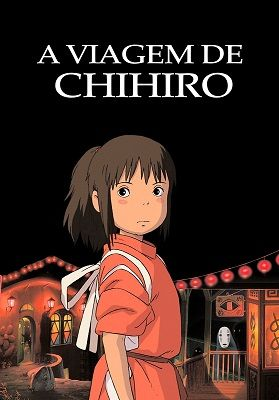 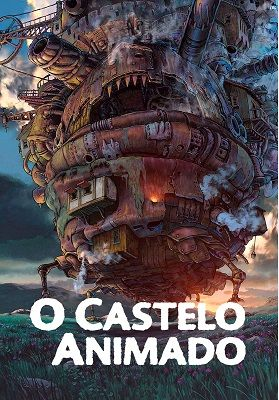 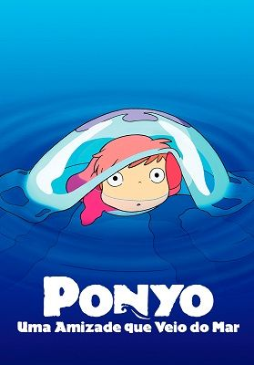 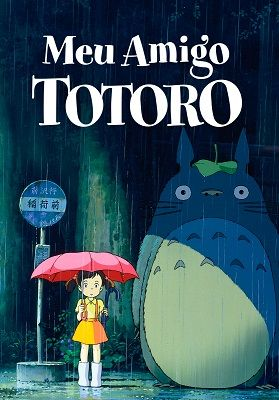Os curtas do Studio Ghibli são como pequenas cápsulas de sua magia e excelência. Apesar do tamanho, eles mantêm a qualidade visual excepcional e a capacidade de envolver emocionalmente os espectadores, abordando uma variedade de temas, desde o cotidiano até reflexões mais profundas.
.jpeg)
.jpeg)
.jpeg)
.jpeg)
Ronja, a Filha do ladrão, baseada no livro de mesmo nome da autora sueca Astrid Lindgren. Essa série foi dirigida por Goro Miyazaki, filho do lendário diretor do Studio Ghibli, Hayao Miyazaki.
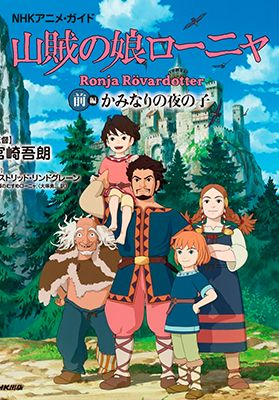O Studio Ghibli produziu documentários que exploram o processo criativo por trás de suas animações. Esses documentários oferecem vislumbres fascinantes dos bastidores do estúdio, revelando as técnicas de animação, as inspirações e o trabalho árduo por trás das obras icônicas.
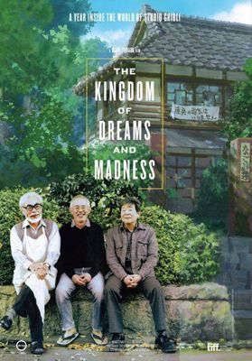 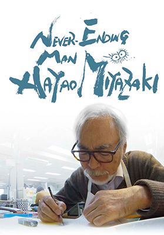 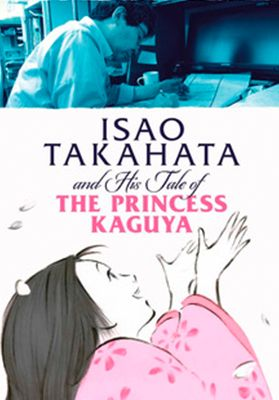 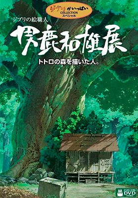O Studio Ghibli colaborou em alguns jogos notáveis, sendo "Ni no Kuni: Wrath of the White Witch" um dos mais conhecidos. O Studio Ghibli também teve envolvimento em outros projetos menores, como alguns jogos baseados em seus filmes, mas "Ni no Kuni" é, de longe, a colaboração mais conhecida e aclamada do estúdio no mundo dos videogames.
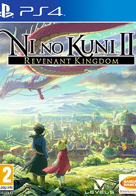 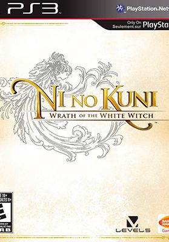 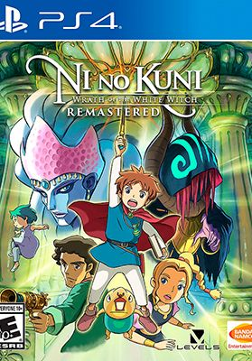 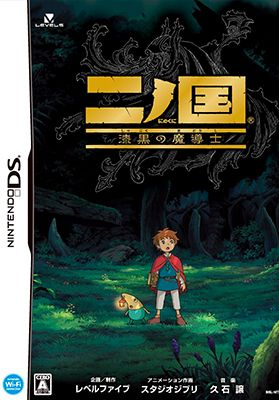e ai, curtiu a página? Se tiver um tempinho, deixa um feedback aí pow. Ah, e falando nisso, qual é o seu filme favorito da Ghibli? Já assistiu todos? Eu já vi uma boa parte, mas ainda faltam uns para completar a lista completa. Para mim, A Viagem de Chihiro é simplesmente imbatível, tem um lugarzinho especial no meu coração, tlgd?
Vou deixar um feedback pro meu best Nathan <3